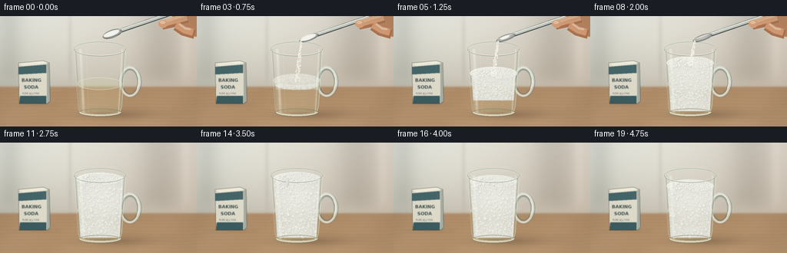
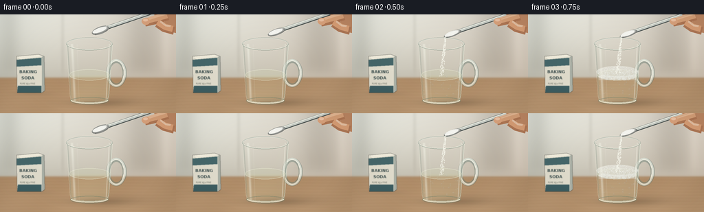

CODING AGENTS AS PIXEL WORLD MODELS
traex/GPT-6.1-Sol · material_0034
点击播放 · 原生 RGB 像素
逐轮保存的候选
回放视频、检查图与代码变化。
每份候选均可单独播放。实际图片检查记录在下方工具轨迹中。
候选 01播放与检查图
点击播放 · 原生 RGB 像素


展开代码变化
--- 上一保存版本
+++ 本次保存版本
@@ -0,0 +1,313 @@
+from pathlib import Path
+import numpy as np
+from PIL import Image, ImageDraw, ImageFilter, ImageFont
+import artifact_io
+
+ROOT=Path(__file__).resolve().parent
+W,H,S=256,144,3
+SW,SH=W*S,H*S
+rng=np.random.default_rng(18214)
+yy,xx=np.mgrid[0:SH,0:SW].astype(float)
+X,Y=xx/S,yy/S
+
+def imarr(a): return Image.fromarray(np.uint8(np.clip(a,0,255)), 'RGB')
+def layer(): return Image.new('RGBA',(SW,SH))
+def ellipse(d,bb,fill,outline=None,width=1):
+ d.ellipse(tuple(int(v*S) for v in bb),fill=fill,outline=outline,width=max(1,int(width*S)))
+def line(d,pts,fill,width=1):
+ d.line([(int(x*S),int(y*S)) for x,y in pts],fill=fill,width=max(1,int(width*S)),joint='curve')
+def poly(d,pts,fill): d.polygon([(int(x*S),int(y*S)) for x,y in pts], fill=fill)
+def blend(im, color, alpha):
+ a=np.clip(alpha,0,1)[...,None]
+ arr=np.asarray(im).astype(float)
+ c=np.asarray(color)
+ return imarr(arr*(1-a)+c*a)
+
+# Continuous photographic background: warm, softly out of focus kitchen.
+base=np.empty((SH,SW,3),float)
+wall=np.stack([216-0.26*Y+0.055*X,218-0.30*Y+0.014*X,209-0.34*Y],-1)
+base[:]=wall
+# window light falling from the upper left
+light=16*np.exp(-((X-48)/92)**2-((Y-11)/73)**2)
+base+=light[...,None]
+# blurred vertical kitchen elements
+for x,width,col in [(14,15,-14),(91,3,-10),(208,30,-23),(241,8,9)]:
+ base+=col*np.exp(-((X-x)/width)**2)[...,None]*(1/(1+np.exp((Y-83)/5)))[...,None]
+# photographic wooden worktop
+wood=np.stack([178+0.18*(Y-94),143+0.17*(Y-94),107+0.14*(Y-94)],-1)
+gr=(np.sin(Y*1.42+np.sin(X*.021)*1.5)+.44*np.sin(Y*4.2+X*.03)+.29*np.sin(Y*8.4+X*.07))
+wood+=gr[...,None]*1.25
+wood+=np.sin(X*.07+Y*.05)[...,None]*2
+transition=1/(1+np.exp(-(Y-92)/.8))
+base=base*(1-transition[...,None])+wood*transition[...,None]
+# blurred counter edge
+base-=3*np.exp(-((Y-93)/1.5)**2)[...,None]
+base+=rng.normal(0,.30,(SH,SW,1))
+background=imarr(base)
+# Subtle baking soda carton, behind the glass. It's an ordinary countertop experiment.
+p=layer(); d=ImageDraw.Draw(p)
+poly(d,[(24,61),(56,58),(61,62),(61,114),(25,114)],(226,222,206,255))
+poly(d,[(56,58),(64,61),(65,111),(61,114),(61,62)],(169,175,165,255))
+poly(d,[(24,61),(56,58),(63,61),(30,65)],(242,238,222,255))
+poly(d,[(24,66),(60,63),(60,74),(24,76)],(70,103,106,255))
+poly(d,[(26,104),(60,104),(60,114),(25,114)],(61,94,98,255))
+font=ImageFont.truetype('/usr/share/fonts/truetype/dejavu/DejaVuSans-Bold.ttf',int(6*S))
+font2=ImageFont.truetype('/usr/share/fonts/truetype/dejavu/DejaVuSans.ttf',int(3.1*S))
+d.text((28*S,80*S),'BAKING',font=font,fill=(67,84,83,255))
+d.text((31*S,89*S),'SODA',font=font,fill=(67,84,83,255))
+d.text((29*S,99*S),'PURE ⢠FINE',font=font2,fill=(113,118,106,255))
+background=Image.alpha_composite(background.convert('RGBA'),p.filter(ImageFilter.GaussianBlur(.38*S))).convert('RGB')
+# Ground contact and directional shadows.
+shadow=.19*np.exp(-((X-144)/43)**2-((Y-129)/5.3)**2)+.11*np.exp(-((X-170)/52)**2-((Y-126)/8)**2)
+shadow+=.10*np.exp(-((X-46)/25)**2-((Y-115)/3)**2)
+background=blend(background,[75, sixty:=60,43],shadow)
+
+CX=130.; rim=43.; bottom=126.
+def rx(y): return 32.7-(y-rim)*.065
+inside=(Y>=rim)&(Y<=bottom)&(np.abs(X-CX)<rx(Y))
+# persistent distributions, evolving continuously over the shot
+bubbles=[]
+for i in range(760):
+ u=rng.uniform(-1,1); z=rng.uniform(0,1)
+ r=float(rng.uniform(.38,1.7) if i%7 else rng.uniform(1.7,2.8))
+ bubbles.append((u,z,r,rng.uniform(0,6.283),rng.uniform(.8,1.6)))
+topb=[]
+for i in range(510):
+ # uniform disk, projected into an oblique elliptical liquid surface
+ radius=np.sqrt(rng.random()); ang=rng.uniform(0,6.283)
+ topb.append((radius*np.cos(ang),radius*np.sin(ang),rng.uniform(.32,1.58),rng.uniform(0,6.283)))
+particles=[(rng.uniform(-1,1),rng.random(),rng.uniform(.18,.50)) for _ in range(235)]
+# a mild resolved microtexture is shared across frames
+noise=rng.normal(0,1,(SH,SW))
+noise=np.asarray(Image.fromarray(np.float32(noise),mode='F').filter(ImageFilter.GaussianBlur(.25*S))) if False else noise
+
+# shading a curved bubble, inexpensive local raster, lit from upper left
+def bubble(im,cx,cy,r,opacity=1,wet=False):
+ x0=max(0,int((cx-r-1)*S)); x1=min(SW,int((cx+r+1)*S)+1)
+ y0=max(0,int((cy-r-1)*S)); y1=min(SH,int((cy+r+1)*S)+1)
+ if x1<=x0 or y1<=y0: return
+ vx=(xx[y0:y1,x0:x1]/S-cx)/r; vy=(yy[y0:y1,x0:x1]/S-cy)/r
+ q=vx*vx+vy*vy; mask=q<1
+ nz=np.sqrt(np.maximum(0,1-q))
+ if wet:
+ alpha=(.06+.43*np.exp(-((np.sqrt(q)-.88)/.11)**2))*mask*opacity
+ shine=np.exp(-((vx+.38)**2+(vy+.43)**2)/.038)
+ shade=142+68*nz+40*shine-25*vy
+ col=np.stack([shade*.95,shade,shade*.99],-1)
+ alpha=np.maximum(alpha,.8*shine*mask*opacity)
+ else:
+ lum=213+25*nz-10*vx-14*vy
+ ring=np.exp(-((np.sqrt(q)-.93)/.09)**2)
+ lum-=22*ring
+ shine=np.exp(-((vx+.35)**2+(vy+.40)**2)/.06)
+ lum+=19*shine
+ col=np.stack([lum+3,lum+3,lum-5],-1)
+ alpha=np.clip((1-q)*10,0,1)*mask*opacity
+ block=im[y0:y1,x0:x1]
+ block[:]=block*(1-alpha[...,None])+col*alpha[...,None]
+
+# Mug handle is rendered behind the cup, as double transparent glass contours.
+def handle(im):
+ p=layer(); d=ImageDraw.Draw(p)
+ bb=(154,65,184,106)
+ ellipse(d,bb,None,(105,123,115,125),6)
+ ellipse(d,(154.7,65.3,183.3,105.4),None,(225,238,228,145),3.4)
+ ellipse(d,(157,67,181,104),None,(247,248,235,200),1)
+ ellipse(d,(158,70,178.8,101),None,(117,137,123,100),.7)
+ line(d,[(178,75),(180,81),(180,88),(178,95)],(255,253,238,165),1.1)
+ return Image.alpha_composite(im.convert('RGBA'),p).convert('RGB')
+
+# Metal teaspoon with white powder; hand holds it from the upper right.
+def spoon_and_hand(im,t):
+ if t>=12: return im
+ # spoon approaches, rotates to spill, then withdraws upward
+ enter=min(1,t/2)
+ leave=max(0,(t-8)/3)
+ bx=146+18*leave; by=23+5*enter-42*leave
+ tilt=.18+.28*enter
+ # bowl elongated and rotated toward lower-left, handle upper-right
+ axis=np.array([.94,-.34]); across=np.array([.34,.94])
+ p=layer(); d=ImageDraw.Draw(p)
+ # shiny handle
+ a=(bx+7,by-3); b=(238+20*leave,by-32)
+ line(d,[a,b],(72,80,78,255),5.5)
+ line(d,[(a[0],a[1]-.6),(b[0],b[1]-.6)],(198,203,196,255),4)
+ line(d,[(a[0]+1,a[1]-1.6),(b[0],b[1]-1.6)],(249,250,237,255),1)
+ im=Image.alpha_composite(im.convert('RGBA'),p).convert('RGB')
+ arr=np.asarray(im).astype(float)
+ vx=(X-bx)*axis[0]+(Y-by)*axis[1]; vy=(X-bx)*across[0]+(Y-by)*across[1]
+ rad=13.2; minor=5.3-1.3*enter
+ q=(vx/rad)**2+(vy/minor)**2; mask=q<1
+ z=np.sqrt(np.maximum(0,1-q))
+ value=113+84*z+52*np.exp(-((vy/minor+.47)/.16)**2)-30*np.exp(-((vy/minor-.64)/.20)**2)
+ spooncol=np.stack([value*.99,value,value*.97],-1)
+ arr=np.where(mask[...,None],spooncol,arr)
+ # Raised granular spoonful shrinking while the powder falls.
+ amount=np.clip((8-t)/5,0,1)
+ if amount>0:
+ qm=((vx+1)/(10.8*max(.43,amount)))**2+((vy+.8)/(3.2*max(.55,amount)))**2
+ pm=qm<1
+ powder=240+7*np.sqrt(np.maximum(0,1-qm))+rng.normal(0,1.3,(SH,SW))
+ pc=np.stack([powder,powder,powder-5],-1)
+ arr=np.where(pm[...,None],pc,arr)
+ im=imarr(arr)
+ # Forefinger and thumb: rounded skin forms, slight creases and soft highlights.
+ p=layer(); d=ImageDraw.Draw(p)
+ off=30*leave
+ poly(d,[(221+off,-8),(256,-8),(256,27-35*leave),(242+off,24-35*leave),(230+off,14-35*leave)],(189,135,99,255))
+ line(d,[(244+off,3-35*leave),(225+off,9-35*leave),(211+off,12-35*leave)],(176,119,84,255),11)
+ line(d,[(243+off,1-35*leave),(225+off,6-35*leave),(211+off,10-35*leave)],(214,160,120,255),9)
+ line(d,[(240+off,-1-35*leave),(226+off,3-35*leave),(214+off,7-35*leave)],(229,180,141,230),4)
+ ellipse(d,(206+off,5-35*leave,218+off,15-35*leave),(218,163,125,255))
+ ellipse(d,(208+off,6-35*leave,215+off,10-35*leave),(236,194,164,255))
+ # thumb pads curl under handle, leaving shaft visible between fingers
+ line(d,[(253+off,24-35*leave),(239+off,20-35*leave),(229+off,13-35*leave)],(176,120,86,255),12)
+ line(d,[(251+off,21-35*leave),(240+off,18-35*leave),(229+off,11-35*leave)],(217,159,118,255),9)
+ line(d,[(248+off,17-35*leave),(241+off,16-35*leave),(233+off,10-35*leave)],(231,179,140,160),3)
+ line(d,[(239+off,10-35*leave),(238+off,13-35*leave)],(157,105,73,135),.55)
+ return Image.alpha_composite(im.convert('RGBA'),p).convert('RGB')
+
+frames=[]
+for t in range(20):
+ im=handle(background.copy())
+ # Refraction through the cylindrical clear cup subtly compresses the background.
+ arr=np.asarray(im).astype(float)
+ u=(X-CX)/np.maximum(1,rx(Y))
+ refr_x=np.clip(np.rint((CX+(X-CX)*.89)*S),0,SW-1).astype(int)
+ refr_y=np.clip(np.rint((Y+.7)*S),0,SH-1).astype(int)
+ refr=arr[refr_y,refr_x]
+ arr=np.where(inside[...,None],.68*arr+.32*refr,arr)
+ # back glass edges and colored transparency
+ edge=np.exp(-((np.abs(u)-.975)/.027)**2)*inside
+ arr=arr*(1-.25*edge[...,None])+np.array([89,109,99])*(.25*edge[...,None])
+ im=imarr(arr)
+ # Vinegar: clear, faint straw coloration, liquid depth visible through glass.
+ liquid_y=88.
+ lm=(inside&(Y>=liquid_y)).astype(float)
+ a=lm*(.12+.12*np.clip((Y-liquid_y)/40,0,1))
+ im=blend(im,[213,209,166],a)
+ p=layer(); d=ImageDraw.Draw(p)
+ ellipse(d,(CX-29.3,liquid_y-8,CX+29.3,liquid_y+8),(207,208,170,62),(236,238,215,160),.7)
+ im=Image.alpha_composite(im.convert('RGBA'),p).convert('RGB')
+ # Chemical reaction accelerates: a white froth column expands, crests, then subsides.
+ if t<2: growth=0
+ elif t<=12: growth=(t-2)/10
+ else: growth=1-(t-12)*.043
+ foam_top=88-45*growth
+ foam_bottom=89+35*min(1,max(0,(t-2)/5))
+ arr=np.asarray(im).astype(float)
+ if growth>0:
+ rmax=rx(Y)-1.9
+ # front of foam has an elliptical upper meniscus
+ ft=foam_top+6.6*np.sqrt(np.maximum(0,1-((X-CX)/31.1)**2))
+ fm=(Y>ft)&(Y<foam_bottom)&(np.abs(X-CX)<rmax)&inside
+ amount=np.clip(growth*4,0,1)
+ shade=233-15*(np.abs((X-CX)/33)**2)+4*np.sin(Y*.11)+noise*1.1
+ col=np.stack([shade+2,shade+2,shade-5],-1)
+ a=fm.astype(float)*(.90*amount)
+ arr=arr*(1-a[...,None])+col*a[...,None]
+ # Rising packed gas bubbles within the froth.
+ for u0,z0,r0,phase,speed in bubbles:
+ z=(z0+t*.025*speed)%1
+ cy=ft[int(np.clip((foam_top+7)*S,0,SH-1)),int(np.clip((CX+u0*29)*S,0,SW-1))]+z*max(1,foam_bottom-foam_top-7)
+ cx=CX+u0*(rx(cy)-3)+.25*np.sin(t*.45+phase)
+ if cy>foam_top+5 and cy<foam_bottom-1 and abs(cx-CX)+r0<rx(cy)-1.3:
+ bubble(arr,cx,cy,r0*(.73+.27*growth),.55*min(1,growth*4))
+ # A handful of transparent CO2 bubbles beneath the first thin foam layer.
+ if 2<=t<=7:
+ for j in range(38):
+ cx=CX+26*np.sin(j*9.32)
+ cy=120-((j*6.32+t*6.8)%31)
+ if cy>foam_bottom-1: bubble(arr,cx,cy,.6+(j%4)*.26,.65,True)
+ im=imarr(arr)
+ # Rear rim, glass thickness and elliptical opening.
+ p=layer(); d=ImageDraw.Draw(p)
+ # back half rim is drawn before foam surface
+ bbox=((CX-33.5)*S,(rim-9.2)*S,(CX+33.5)*S,(rim+9.2)*S)
+ d.arc(tuple(map(int,bbox)),180,360,fill=(228,236,226,200),width=3)
+ d.arc(tuple(map(int,bbox)),180,360,fill=(106,124,111,180),width=1)
+ im=Image.alpha_composite(im.convert('RGBA'),p).convert('RGB')
+ # Foam cap surface, densely tessellated tiny shaded bubbles, not just a flat white fill.
+ if growth>0:
+ surf_rx=30.8; surf_ry=8.6
+ u2=(X-CX)/surf_rx; v2=(Y-foam_top)/surf_ry
+ sm=(u2*u2+v2*v2)<1
+ lum=236-9*v2-5*u2+noise*.65
+ cc=np.stack([lum+3,lum+3,lum-4],-1)
+ im=blend(im,cc,sm.astype(float)*min(1,growth*5)*.95)
+ arr=np.asarray(im).astype(float)
+ for ux,uz,r,phase in sorted(topb,key=lambda z:z[1]):
+ cx=CX+ux*29.6
+ cy=foam_top+uz*7.9-.25*np.sin(t*.65+phase)
+ # bubbles gently inflate and collapse rather than all flickering simultaneously
+ rad=r*(.8+.15*np.sin(t*.8+phase))*min(1,growth*5)
+ if rad>.12: bubble(arr,cx,cy,rad,.92)
+ # Larger glistening bubble clusters near the surface center.
+ for j in range(15):
+ cx=CX+19*np.sin(j*12.4); cy=foam_top+4*np.cos(j*9.9)
+ r=1.25+.6*np.sin(j*3.14+1.8)**2
+ bubble(arr,cx,cy,r*min(1,growth*3),.88)
+ im=imarr(arr)
+ # Front glass glaze: specular reflections, fine contours, bevelled foot.
+ alpha=(.025+.09*np.abs(u)**6)*inside
+ im=blend(im,[229,239,220],alpha)
+ # Broad softbox reflection to left, narrow lines avoid an outlined cartoon appearance.
+ left_center=CX-rx(Y)*.78
+ right_center=CX+rx(Y)*.88
+ sh1=np.exp(-((X-left_center)/1.8)**2)*inside*(.33+.06*np.cos(Y*.12))
+ sh2=np.exp(-((X-right_center)/.58)**2)*inside*.43
+ im=blend(im,[255,255,243],sh1+sh2)
+ sh3=np.exp(-((X-(CX-rx(Y)*.55))/.45)**2)*inside*.12
+ im=blend(im,[255,255,246],sh3)
+ p=layer(); d=ImageDraw.Draw(p)
+ # bevel foot and vertical edges
+ line(d,[(97.3,44),(98.8,77),(101.7,119),(104,126)],(246,250,231,130),.65)
+ line(d,[(163,44),(161,78),(158,118),(155.5,126)],(231,242,225,160),.7)
+ ellipse(d,(102,120.6,158,131.5),None,(117,131,107,130),1.1)
+ d.arc((int(103*S),int(120*S),int(157*S),int(130*S)),0,180,fill=(246,246,224,210),width=int(1.7*S))
+ d.arc((int(105*S),int(121*S),int(155*S),int(128*S)),0,180,fill=(214,228,201,220),width=int(.7*S))
+ # Full rim on front, foam may conceal center at its crest.
+ rb=tuple(int(v*S) for v in (CX-33.5,rim-9.2,CX+33.5,rim+9.2))
+ d.arc(rb,0,180,fill=(117,134,119,180),width=max(1,int(1.5*S)))
+ rb2=tuple(int(v*S) for v in (CX-32.8,rim-8.6,CX+32.8,rim+8.6))
+ d.arc(rb2,0,180,fill=(249,250,237,230),width=max(1,int(.9*S)))
+ im=Image.alpha_composite(im.convert('RGBA'),p).convert('RGB')
+ # Crest: small irregular mounds at brim and one short slow run down the front.
+ if 10<=t<=16:
+ strength=np.sin(np.pi*(t-9)/8)
+ arr=np.asarray(im).astype(float)
+ for j in range(44):
+ cx=117+(j%9)*2.3+np.sin(j*7)*.7
+ cy=44+(j//9)*1.3-4*strength
+ bubble(arr,cx,cy,(.8+.45*np.sin(j*13)**2)*strength,.87)
+ if t>=12:
+ length=7+2.4*(t-12)
+ for j in range(52):
+ cy=49+(j/52)*length
+ cx=117+1*np.sin(j*.12)
+ r=(2.2-.7*j/52)*(1-.25*max(0,t-14))
+ if r>.35: bubble(arr,cx,cy,r,.7)
+ im=imarr(arr)
+ # Baking soda falls in a clearly visible granular stream from the spoon into the cup.
+ im=spoon_and_hand(im,t)
+ if 2<=t<=8:
+ p=layer(); d=ImageDraw.Draw(p)
+ for spread,phase,r in particles:
+ v=(phase+t*.275)%1
+ startx,starty=136,32
+ endy=max(foam_top,43)+3
+ cy=starty+(endy-starty)*v
+ cx=startx-6*v+spread*(.8+2.8*v)
+ ellipse(d,(cx-r,cy-r,cx+r,cy+r),(248,248,237,int(215+30*(1-v))))
+ # a faint dense powder core joins the independent visible grains
+ line(d,[(135.5,33),(134,40),(132,48 if foam_top>48 else foam_top)],(241,242,231,110),.7)
+ im=Image.alpha_composite(im.convert('RGBA'),p).convert('RGB')
+ # Natural restrained lens vignette and film grain, consistent throughout timelapse.
+ ar=np.asarray(im).astype(float)
+ vignette=1-.075*((X-128)/170)**2-.05*((Y-72)/100)**2
+ ar=ar*vignette[...,None]
+ out=imarr(ar).resize((W,H),Image.Resampling.LANCZOS)
+ frames.append(np.asarray(out,dtype=np.uint8))
+
+artifact_io.save(np.stack(frames),ROOT)
+print('Saved',len(frames),'RGB frames of',W,'x',H)
可观测工具轨迹
实际执行的命令与返回图片。
命令 1exit 0
/bin/bash -lc 'ls -la && cat prompt.txt && cat GENERATION_RULES.md && cat task_spec.json'
命令 2exit 0
/bin/bash -lc 'cat artifact_io.py && fc-list | head'
命令 3exit 0
/bin/bash -lc "cat > generate.py <<'PY'
from pathlib import Path
import numpy as np
from PIL import Image, ImageDraw, ImageFilter, ImageFont
import artifact_io
ROOT=Path(__file__).resolve().parent
W,H,S=256,144,3
SW,SH=W*S,H*S
rng=np.random.default_rng(18214)
yy,xx=np.mgrid[0:SH,0:SW].astype(float)
X,Y=xx/S,yy/S
def imarr(a): return Image.fromarray(np.uint8(np.clip(a,0,255)), 'RGB')
def layer(): return Image.new('RGBA',(SW,SH))
def ellipse(d,bb,fill,outline=None,width=1):
d.ellipse(tuple(int(v*S) for v in bb),fill=fill,outline=outline,width=max(1,int(width*S)))
def line(d,pts,fill,width=1):
d.line([(int(x*S),int(y*S)) for x,y in pts],fill=fill,width=max(1,int(width*S)),joint='curve')
def poly(d,pts,fill): d.polygon([(int(x*S),int(y*S)) for x,y in pts], fill=fill)
def blend(im, color, alpha):
a=np.clip(alpha,0,1)[...,None]
arr=np.asarray(im).astype(float)
c=np.asarray(color)
return imarr(arr*(1-a)+c*a)
# Continuous photographic background: warm, softly out of focus kitchen.
base=np.empty((SH,SW,3),float)
wall=np.stack([216-0.26*Y+0.055*X,218-0.30*Y+0.014*X,209-0.34*Y],-1)
base[:]=wall
# window light falling from the upper left
light=16*np.exp(-((X-48)/92)**2-((Y-11)/73)**2)
base+=light[...,None]
# blurred vertical kitchen elements
for x,width,col in [(14,15,-14),(91,3,-10),(208,30,-23),(241,8,9)]:
base+=col*np.exp(-((X-x)/width)**2)[...,None]*(1/(1+np.exp((Y-83)/5)))[...,None]
# photographic wooden worktop
wood=np.stack([178+0.18*(Y-94),143+0.17*(Y-94),107+0.14*(Y-94)],-1)
gr=(np.sin(Y*1.42+np.sin(X*.021)*1.5)+.44*np.sin(Y*4.2+X*.03)+.29*np.sin(Y*8.4+X*.07))
wood+=gr[...,None]*1.25
wood+=np.sin(X*.07+Y*.05)[...,None]*2
transition=1/(1+np.exp(-(Y-92)/.8))
base=base*(1-transition[...,None])+wood*transition[...,None]
# blurred counter edge
base-=3*np.exp(-((Y-93)/1.5)**2)[...,None]
base+=rng.normal(0,.30,(SH,SW,1))
background=imarr(base)
# Subtle baking soda carton, behind the glass. It's an ordinary countertop experiment.
p=layer(); d=ImageDraw.Draw(p)
poly(d,[(24,61),(56,58),(61,62),(61,114),(25,114)],(226,222,206,255))
poly(d,[(56,58),(64,61),(65,111),(61,114),(61,62)],(169,175,165,255))
poly(d,[(24,61),(56,58),(63,61),(30,65)],(242,238,222,255))
poly(d,[(24,66),(60,63),(60,74),(24,76)],(70,103,106,255))
poly(d,[(26,104),(60,104),(60,114),(25,114)],(61,94,98,255))
font=ImageFont.truetype('/usr/share/fonts/truetype/dejavu/DejaVuSans-Bold.ttf',int(6*S))
font2=ImageFont.truetype('/usr/share/fonts/truetype/dejavu/DejaVuSans.ttf',int(3.1*S))
d.text((28*S,80*S),'BAKING',font=font,fill=(67,84,83,255))
d.text((31*S,89*S),'SODA',font=font,fill=(67,84,83,255))
d.text((29*S,99*S),'PURE ⢠FINE',font=font2,fill=(113,118,106,255))
background=Image.alpha_composite(background.convert('RGBA'),p.filter(ImageFilter.GaussianBlur(.38*S))).convert('RGB')
# Ground contact and directional shadows.
shadow=.19*np.exp(-((X-144)/43)**2-((Y-129)/5.3)**2)+.11*np.exp(-((X-170)/52)**2-((Y-126)/8)**2)
shadow+=.10*np.exp(-((X-46)/25)**2-((Y-115)/3)**2)
background=blend(background,[75, sixty:=60,43],shadow)
CX=130.; rim=43.; bottom=126.
def rx(y): return 32.7-(y-rim)*.065
inside=(Y>=rim)&(Y<=bottom)&(np.abs(X-CX)<rx(Y))
# persistent distributions, evolving continuously over the shot
bubbles=[]
for i in range(760):
u=rng.uniform(-1,1); z=rng.uniform(0,1)
r=float(rng.uniform(.38,1.7) if i%7 else rng.uniform(1.7,2.8))
bubbles.append((u,z,r,rng.uniform(0,6.283),rng.uniform(.8,1.6)))
topb=[]
for i in range(510):
# uniform disk, projected into an oblique elliptical liquid surface
radius=np.sqrt(rng.random()); ang=rng.uniform(0,6.283)
topb.append((radius*np.cos(ang),radius*np.sin(ang),rng.uniform(.32,1.58),rng.uniform(0,6.283)))
particles=[(rng.uniform(-1,1),rng.random(),rng.uniform(.18,.50)) for _ in range(235)]
# a mild resolved microtexture is shared across frames
noise=rng.normal(0,1,(SH,SW))
noise=np.asarray(Image.fromarray(np.float32(noise),mode='F').filter(ImageFilter.GaussianBlur(.25*S))) if False else noise
# shading a curved bubble, inexpensive local raster, lit from upper left
def bubble(im,cx,cy,r,opacity=1,wet=False):
x0=max(0,int((cx-r-1)*S)); x1=min(SW,int((cx+r+1)*S)+1)
y0=max(0,int((cy-r-1)*S)); y1=min(SH,int((cy+r+1)*S)+1)
if x1<=x0 or y1<=y0: return
vx=(xx[y0:y1,x0:x1]/S-cx)/r; vy=(yy[y0:y1,x0:x1]/S-cy)/r
q=vx*vx+vy*vy; mask=q<1
nz=np.sqrt(np.maximum(0,1-q))
if wet:
alpha=(.06+.43*np.exp(-((np.sqrt(q)-.88)/.11)**2))*mask*opacity
shine=np.exp(-((vx+.38)**2+(vy+.43)**2)/.038)
shade=142+68*nz+40*shine-25*vy
col=np.stack([shade*.95,shade,shade*.99],-1)
alpha=np.maximum(alpha,.8*shine*mask*opacity)
else:
lum=213+25*nz-10*vx-14*vy
ring=np.exp(-((np.sqrt(q)-.93)/.09)**2)
lum-=22*ring
shine=np.exp(-((vx+.35)**2+(vy+.40)**2)/.06)
lum+=19*shine
col=np.stack([lum+3,lum+3,lum-5],-1)
alpha=np.clip((1-q)*10,0,1)*mask*opacity
block=im[y0:y1,x0:x1]
block[:]=block*(1-alpha[...,None])+col*alpha[...,None]
# Mug handle is rendered behind the cup, as double transparent glass contours.
def handle(im):
p=layer(); d=ImageDraw.Draw(p)
bb=(154,65,184,106)
ellipse(d,bb,None,(105,123,115,125),6)
ellipse(d,(154.7,65.3,183.3,105.4),None,(225,238,228,145),3.4)
ellipse(d,(157,67,181,104),None,(247,248,235,200),1)
ellipse(d,(158,70,178.8,101),None,(117,137,123,100),.7)
line(d,[(178,75),(180,81),(180,88),(178,95)],(255,253,238,165),1.1)
return Image.alpha_composite(im.convert('RGBA'),p).convert('RGB')
# Metal teaspoon with white powder; hand holds it from the upper right.
def spoon_and_hand(im,t):
if t>=12: return im
# spoon approaches, rotates to spill, then withdraws upward
enter=min(1,t/2)
leave=max(0,(t-8)/3)
bx=146+18*leave; by=23+5*enter-42*leave
tilt=.18+.28*enter
# bowl elongated and rotated toward lower-left, handle upper-right
axis=np.array([.94,-.34]); across=np.array([.34,.94])
p=layer(); d=ImageDraw.Draw(p)
# shiny handle
a=(bx+7,by-3); b=(238+20*leave,by-32)
line(d,[a,b],(72,80,78,255),5.5)
line(d,[(a[0],a[1]-.6),(b[0],b[1]-.6)],(198,203,196,255),4)
line(d,[(a[0]+1,a[1]-1.6),(b[0],b[1]-1.6)],(249,250,237,255),1)
im=Image.alpha_composite(im.convert('RGBA'),p).convert('RGB')
arr=np.asarray(im).astype(float)
vx=(X-bx)*axis[0]+(Y-by)*axis[1]; vy=(X-bx)*across[0]+(Y-by)*across[1]
rad=13.2; minor=5.3-1.3*enter
q=(vx/rad)**2+(vy/minor)**2; mask=q<1
z=np.sqrt(np.maximum(0,1-q))
value=113+84*z+52*np.exp(-((vy/minor+.47)/.16)**2)-30*np.exp(-((vy/minor-.64)/.20)**2)
spooncol=np.stack([value*.99,value,value*.97],-1)
arr=np.where(mask[...,None],spooncol,arr)
# Raised granular spoonful shrinking while the powder falls.
amount=np.clip((8-t)/5,0,1)
if amount>0:
qm=((vx+1)/(10.8*max(.43,amount)))**2+((vy+.8)/(3.2*max(.55,amount)))**2
pm=qm<1
powder=240+7*np.sqrt(np.maximum(0,1-qm))+rng.normal(0,1.3,(SH,SW))
pc=np.stack([powder,powder,powder-5],-1)
arr=np.where(pm[...,None],pc,arr)
im=imarr(arr)
# Forefinger and thumb: rounded skin forms, slight creases and soft highlights.
p=layer(); d=ImageDraw.Draw(p)
off=30*leave
poly(d,[(221+off,-8),(256,-8),(256,27-35*leave),(242+off,24-35*leave),(230+off,14-35*leave)],(189,135,99,255))
line(d,[(244+off,3-35*leave),(225+off,9-35*leave),(211+off,12-35*leave)],(176,119,84,255),11)
line(d,[(243+off,1-35*leave),(225+off,6-35*leave),(211+off,10-35*leave)],(214,160,120,255),9)
line(d,[(240+off,-1-35*leave),(226+off,3-35*leave),(214+off,7-35*leave)],(229,180,141,230),4)
ellipse(d,(206+off,5-35*leave,218+off,15-35*leave),(218,163,125,255))
ellipse(d,(208+off,6-35*leave,215+off,10-35*leave),(236,194,164,255))
# thumb pads curl under handle, leaving shaft visible between fingers
line(d,[(253+off,24-35*leave),(239+off,20-35*leave),(229+off,13-35*leave)],(176,120,86,255),12)
line(d,[(251+off,21-35*leave),(240+off,18-35*leave),(229+off,11-35*leave)],(217,159,118,255),9)
line(d,[(248+off,17-35*leave),(241+off,16-35*leave),(233+off,10-35*leave)],(231,179,140,160),3)
line(d,[(239+off,10-35*leave),(238+off,13-35*leave)],(157,105,73,135),.55)
return Image.alpha_composite(im.convert('RGBA'),p).convert('RGB')
frames=[]
for t in range(20):
im=handle(background.copy())
# Refraction through the cylindrical clear cup subtly compresses the background.
arr=np.asarray(im).astype(float)
u=(X-CX)/np.maximum(1,rx(Y))
refr_x=np.clip(np.rint((CX+(X-CX)*.89)*S),0,SW-1).astype(int)
refr_y=np.clip(np.rint((Y+.7)*S),0,SH-1).astype(int)
refr=arr[refr_y,refr_x]
arr=np.where(inside[...,None],.68*arr+.32*refr,arr)
# back glass edges and colored transparency
edge=np.exp(-((np.abs(u)-.975)/.027)**2)*inside
arr=arr*(1-.25*edge[...,None])+np.array([89,109,99])*(.25*edge[...,None])
im=imarr(arr)
# Vinegar: clear, faint straw coloration, liquid depth visible through glass.
liquid_y=88.
lm=(inside&(Y>=liquid_y)).astype(float)
a=lm*(.12+.12*np.clip((Y-liquid_y)/40,0,1))
im=blend(im,[213,209,166],a)
p=layer(); d=ImageDraw.Draw(p)
ellipse(d,(CX-29.3,liquid_y-8,CX+29.3,liquid_y+8),(207,208,170,62),(236,238,215,160),.7)
im=Image.alpha_composite(im.convert('RGBA'),p).convert('RGB')
# Chemical reaction accelerates: a white froth column expands, crests, then subsides.
if t<2: growth=0
elif t<=12: growth=(t-2)/10
else: growth=1-(t-12)*.043
foam_top=88-45*growth
foam_bottom=89+35*min(1,max(0,(t-2)/5))
arr=np.asarray(im).astype(float)
if growth>0:
rmax=rx(Y)-1.9
# front of foam has an elliptical upper meniscus
ft=foam_top+6.6*np.sqrt(np.maximum(0,1-((X-CX)/31.1)**2))
fm=(Y>ft)&(Y<foam_bottom)&(np.abs(X-CX)<rmax)&inside
amount=np.clip(growth*4,0,1)
shade=233-15*(np.abs((X-CX)/33)**2)+4*np.sin(Y*.11)+noise*1.1
col=np.stack([shade+2,shade+2,shade-5],-1)
a=fm.astype(float)*(.90*amount)
arr=arr*(1-a[...,None])+col*a[...,None]
# Rising packed gas bubbles within the froth.
for u0,z0,r0,phase,speed in bubbles:
z=(z0+t*.025*speed)%1
cy=ft[int(np.clip((foam_top+7)*S,0,SH-1)),int(np.clip((CX+u0*29)*S,0,SW-1))]+z*max(1,foam_bottom-foam_top-7)
cx=CX+u0*(rx(cy)-3)+.25*np.sin(t*.45+phase)
if cy>foam_top+5 and cy<foam_bottom-1 and abs(cx-CX)+r0<rx(cy)-1.3:
bubble(arr,cx,cy,r0*(.73+.27*growth),.55*min(1,growth*4))
# A handful of transparent CO2 bubbles beneath the first thin foam layer.
if 2<=t<=7:
for j in range(38):
cx=CX+26*np.sin(j*9.32)
cy=120-((j*6.32+t*6.8)%31)
if cy>foam_bottom-1: bubble(arr,cx,cy,.6+(j%4)*.26,.65,True)
im=imarr(arr)
# Rear rim, glass thickness and elliptical opening.
p=layer(); d=ImageDraw.Draw(p)
# back half rim is drawn before foam surface
bbox=((CX-33.5)*S,(rim-9.2)*S,(CX+33.5)*S,(rim+9.2)*S)
d.arc(tuple(map(int,bbox)),180,360,fill=(228,236,226,200),width=3)
d.arc(tuple(map(int,bbox)),180,360,fill=(106,124,111,180),width=1)
im=Image.alpha_composite(im.convert('RGBA'),p).convert('RGB')
# Foam cap surface, densely tessellated tiny shaded bubbles, not just a flat white fill.
if growth>0:
surf_rx=30.8; surf_ry=8.6
u2=(X-CX)/surf_rx; v2=(Y-foam_top)/surf_ry
sm=(u2*u2+v2*v2)<1
lum=236-9*v2-5*u2+noise*.65
cc=np.stack([lum+3,lum+3,lum-4],-1)
im=blend(im,cc,sm.astype(float)*min(1,growth*5)*.95)
arr=np.asarray(im).astype(float)
for ux,uz,r,phase in sorted(topb,key=lambda z:z[1]):
cx=CX+ux*29.6
cy=foam_top+uz*7.9-.25*np.sin(t*.65+phase)
# bubbles gently inflate and collapse rather than all flickering simultaneously
rad=r*(.8+.15*np.sin(t*.8+phase))*min(1,growth*5)
if rad>.12: bubble(arr,cx,cy,rad,.92)
# Larger glistening bubble clusters near the surface center.
for j in range(15):
cx=CX+19*np.sin(j*12.4); cy=foam_top+4*np.cos(j*9.9)
r=1.25+.6*np.sin(j*3.14+1.8)**2
bubble(arr,cx,cy,r*min(1,growth*3),.88)
im=imarr(arr)
# Front glass glaze: specular reflections, fine contours, bevelled foot.
alpha=(.025+.09*np.abs(u)**6)*inside
im=blend(im,[229,239,220],alpha)
# Broad softbox reflection to left, narrow lines avoid an outlined cartoon appearance.
left_center=CX-rx(Y)*.78
right_center=CX+rx(Y)*.88
sh1=np.exp(-((X-left_center)/1.8)**2)*inside*(.33+.06*np.cos(Y*.12))
sh2=np.exp(-((X-right_center)/.58)**2)*inside*.43
im=blend(im,[255,255,243],sh1+sh2)
sh3=np.exp(-((X-(CX-rx(Y)*.55))/.45)**2)*inside*.12
im=blend(im,[255,255,246],sh3)
p=layer(); d=ImageDraw.Draw(p)
# bevel foot and vertical edges
line(d,[(97.3,44),(98.8,77),(101.7,119),(104,126)],(246,250,231,130),.65)
line(d,[(163,44),(161,78),(158,118),(155.5,126)],(231,242,225,160),.7)
ellipse(d,(102,120.6,158,131.5),None,(117,131,107,130),1.1)
d.arc((int(103*S),int(120*S),int(157*S),int(130*S)),0,180,fill=(246,246,224,210),width=int(1.7*S))
d.arc((int(105*S),int(121*S),int(155*S),int(128*S)),0,180,fill=(214,228,201,220),width=int(.7*S))
# Full rim on front, foam may conceal center at its crest.
rb=tuple(int(v*S) for v in (CX-33.5,rim-9.2,CX+33.5,rim+9.2))
d.arc(rb,0,180,fill=(117,134,119,180),width=max(1,int(1.5*S)))
rb2=tuple(int(v*S) for v in (CX-32.8,rim-8.6,CX+32.8,rim+8.6))
d.arc(rb2,0,180,fill=(249,250,237,230),width=max(1,int(.9*S)))
im=Image.alpha_composite(im.convert('RGBA'),p).convert('RGB')
# Crest: small irregular mounds at brim and one short slow run down the front.
if 10<=t<=16:
strength=np.sin(np.pi*(t-9)/8)
arr=np.asarray(im).astype(float)
for j in range(44):
cx=117+(j%9)*2.3+np.sin(j*7)*.7
cy=44+(j//9)*1.3-4*strength
bubble(arr,cx,cy,(.8+.45*np.sin(j*13)**2)*strength,.87)
if t>=12:
length=7+2.4*(t-12)
for j in range(52):
cy=49+(j/52)*length
cx=117+1*np.sin(j*.12)
r=(2.2-.7*j/52)*(1-.25*max(0,t-14))
if r>.35: bubble(arr,cx,cy,r,.7)
im=imarr(arr)
# Baking soda falls in a clearly visible granular stream from the spoon into the cup.
im=spoon_and_hand(im,t)
if 2<=t<=8:
p=layer(); d=ImageDraw.Draw(p)
for spread,phase,r in particles:
v=(phase+t*.275)%1
startx,starty=136,32
endy=max(foam_top,43)+3
cy=starty+(endy-starty)*v
cx=startx-6*v+spread*(.8+2.8*v)
ellipse(d,(cx-r,cy-r,cx+r,cy+r),(248,248,237,int(215+30*(1-v))))
# a faint dense powder core joins the independent visible grains
line(d,[(135.5,33),(134,40),(132,48 if foam_top>48 else foam_top)],(241,242,231,110),.7)
im=Image.alpha_composite(im.convert('RGBA'),p).convert('RGB')
# Natural restrained lens vignette and film grain, consistent throughout timelapse.
ar=np.asarray(im).astype(float)
vignette=1-.075*((X-128)/170)**2-.05*((Y-72)/100)**2
ar=ar*vignette[...,None]
out=imarr(ar).resize((W,H),Image.Resampling.LANCZOS)
frames.append(np.asarray(out,dtype=np.uint8))
artifact_io.save(np.stack(frames),ROOT)
print('Saved',len(frames),'RGB frames of',W,'x',H)
PY
python generate.py"命令 4exit 2
/bin/bash -lc "python - <<'PY'
import numpy as np
from pathlib import Path
from PIL import Image
p=np.load('pixels.npz')['pixels']
assert p.shape==(144,256,20)
fs=sorted(Path('frames').glob('*.png'))
assert len(fs)==20
assert all(Image.open(f).mode=='RGB' and Image.open(f).size==(256,144) for f in fs)
print('Verified: 20 RGB frames, 256Ã144; pixels.npz and HTML player are present.')
PY
if command -v ffmpeg >/dev/null; then ffmpeg -hide_banner -loglevel error -y -framerate 4 -i frames/%02d.png -c:v libx264 -crf 18 -pix_fmt yuv420p -movflags +faststart video.mp4; fi
ls -lh pixels.npz index.html video.mp4 2>/dev/null"保存候选 1 份；完成命令 4 次；可验证图片返回 0 张。原始 API 响应与完整日志保留在本地。